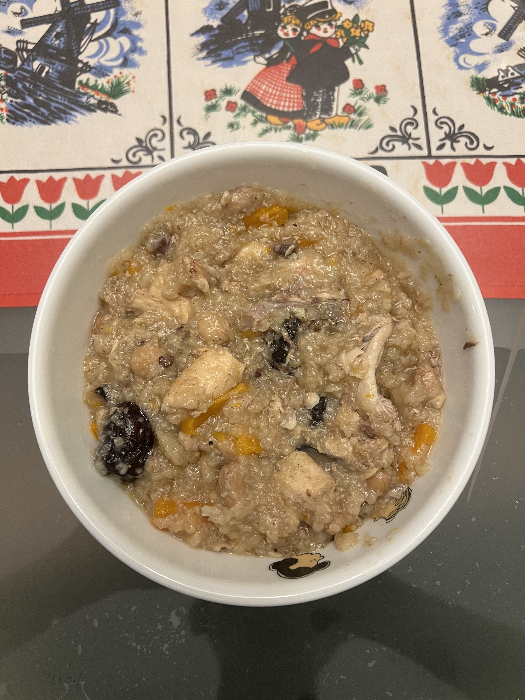

Chicken and Mushroom Porridge

What is this?
Porridge so good you will want to eat it even when you are not sick!
Ingredients (1 serving):
- 2 tablespoons unsalted peanuts
- 1/4 cup uncooked rice
- 2 carrots
- 2 shiitake mushrooms
- 1 chicken fillet
- 1 old ginger
- 1 chicken bone
- 2 dried red dates
- 1 dried honey date
- 2/3 tablespoon soy sauce
- 1 1/3 tablespoons black sesame oil
- 1/3 teaspoon five spice powder
Steps:
- Rinse then soak the peanuts in cold water at least 6 hours before cooking.
- In a rice cooker, rinse then soak the rice in cold water for 15 minutes.
- Cut the carrots, mushrooms and chicken fillet into small pieces.
- Peel off the skin of the ginger and cut a piece that is half a thumb size.
- Pour away the rinsing water from the rice cooker.
- Add water to the rice cooker (rice:water 1:5 or 1:6 if you prefer it to be more soupy).
- Add the carrots, mushrooms, ginger, chicken fillet, chicken bone, red dates and honey date to the rice cooker.
- Add the soy sauce, sesame oil and five spice powder to the rice cooker.
- Stir the contents of the rice cooker well.
- Set the rice cooker to the porridge cooking option for 2 hours and press start.
- After 2 hours, stir the contents of the rice cooker again before serving.